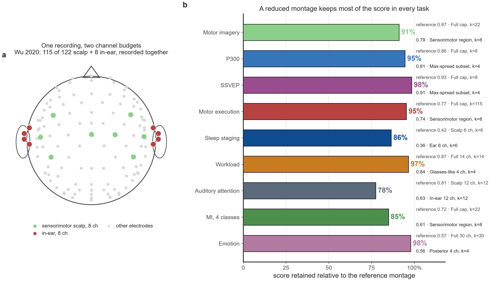
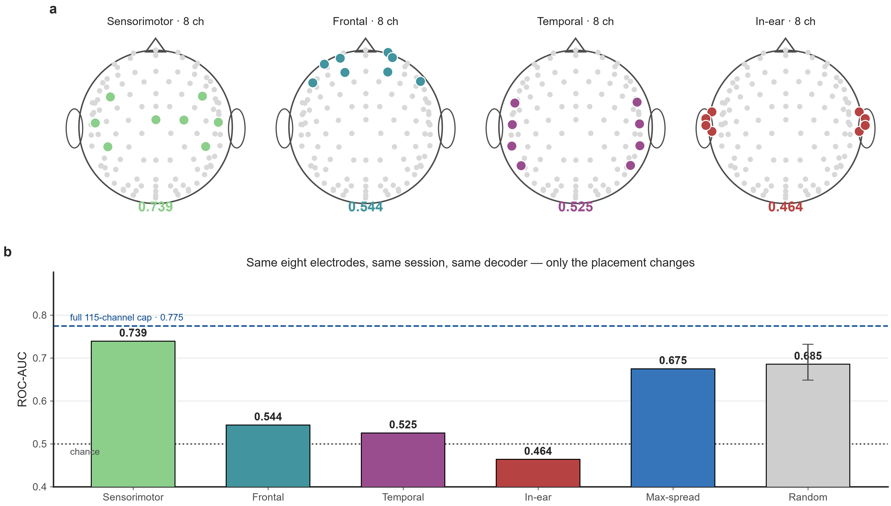
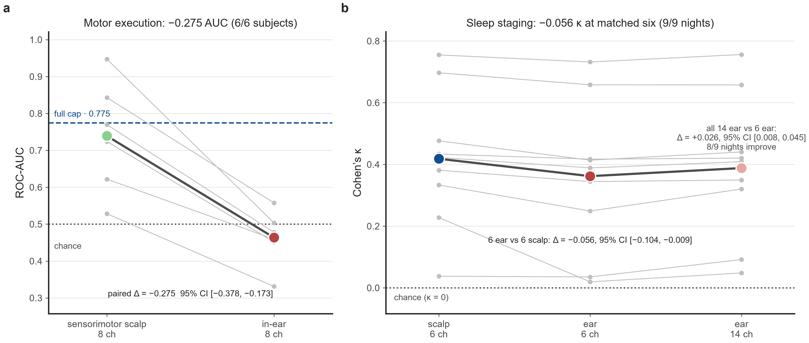

1The question
A lab EEG cap has 64 to 128 electrodes and cannot leave the lab. Smart glasses and earbuds have two to eight. The trade is almost always argued from electrode count alone — and that answers the wrong half of the question.
Electroencephalography is used to study sleep, cognition and neurological conditions, but a dense cap is cumbersome, intrusive and impractical for everyday use. Wearable devices such as smart glasses and earbuds offer a portable alternative with far fewer electrodes. That raises two questions that are usually conflated: how much useful signal survives when you use fewer sensors, and how much depends on where they sit? Without separating the two, researchers and device developers cannot tell which applications a wearable can actually support.
This benchmark separates them. Every comparison puts exactly k electrodes on each side, so a difference between two montages is a difference in placement and nothing else. Where a dataset recorded real wearable electrodes alongside a scalp cap, those are the ones scored.

2The answer
- Electrode count is cheap. Eight of the nine tasks keep at least 85% of their full-montage score with a reduced montage. The exception is auditory attention at 78%, where a lower signal-to-noise ratio is not free — it is only slow.
- Placement is the larger effect. In one session, with eight electrodes on each side and the same decoder, a sensorimotor patch scores 0.739 AUC and the ear scores 0.464 — a loss of 0.275 (95% CI [−0.378, −0.173], 6/6 negative). That is larger than the entire cost of dropping 107 of the 115 cap electrodes, a loss of 0.036 (95% CI [−0.144, 0.073]).
- What a wearable costs depends on the signal. The same ear site loses 0.275 AUC on motor execution, 0.056 κ on sleep staging, and 0.181 accuracy on auditory attention. Broad, slow activity reaches the ear; a focal fast rhythm does not; and a speech envelope is the hardest case of all.
- Where to put them depends on the task. At four electrodes, a frontal set ranks high for cognitive workload (90th percentile of random draws) and poorly for emotion (65th), where a posterior set wins (80th). There is no single "wearable montage". One honest exception: for workload a posterior set wins once 4 s windows are averaged into a single call per recording, so "frontal is best" holds only window by window.


3The nine tasks
One public dataset and one fixed classical decoder per task, over the full published cohort. Retained is the best reduced montage as a percentage of that task's reference; the interval is a paired t interval over participants. Full per-montage tables, per-decoder comparisons and every control are in the benchmark report.
| Task | Reference | Best reduced montage | Retained | Paired Δ [95% CI] | Agreement |
|---|---|---|---|---|---|
| Motor imagery | 0.871 Full cap, k=22 | 0.794 Sensorimotor region, k=8 | 91.1% | −0.077 [−0.120, −0.035] | 18/18 negative n=18, p=0.001 |
| Motor imagery, 4 classes | 0.722 Full cap, k=22 | 0.613 Sensorimotor region, k=8 | 85.0% | −0.108 [−0.144, −0.073] | 18/18 negative n=18, p=0.000 |
| P300 speller | 0.858 Full cap, k=8 | 0.812 Max-spread subset, k=4 | 94.6% | −0.046 [−0.067, −0.025] | 8/8 negative n=8, p=0.001 |
| SSVEP | 0.928 Full cap, k=8 | 0.914 Max-spread subset, k=4 | 98.5% | −0.014 [−0.052, 0.024] | 5/10 negative n=10, p=0.429 |
| Motor execution | 0.775 Full cap, k=115 | 0.739 Sensorimotor region, k=8 | 95.4% | −0.036 [−0.144, 0.073] | 5/6 negative n=6, p=0.438 |
| Sleep staging | 0.418 Scalp 6 ch, k=6 | 0.362 Ear 6 ch, k=6 | 86.5% | −0.056 [−0.104, −0.009] | 9/9 negative n=9, p=0.026 |
| Cognitive workload recording-level: full 14 90.6% / glasses-4 85.4% / posterior-4 87.5% | 0.874 Full 14 ch, k=14 | 0.844 Glasses-like 4 ch, k=4 | 96.6% | −0.030 [−0.059, −0.001] | 30/48 negative n=48, p=0.041 |
| Auditory attention | 0.807 Scalp 12 ch, k=12 | 0.626 In-ear 12 ch, k=12 | 77.5% | −0.181 [−0.249, −0.114] | 14/15 negative n=15, p=0.000 |
| Emotion recognition | 0.570 Full 30 ch, k=30 | 0.558 Posterior 4 ch, k=4 | 97.9% | −0.012 [−0.030, 0.006] | 55/123 negative n=123, p=0.186 |
Read the retention against the margin. Keeping 98% of a score that sits seven points above chance is not the same claim as keeping 98% of 0.928, which is why the report also gives the share of the above-chance margin each reduction consumes.
4How we know
A montage comparison is only as good as the things held fixed. Four rules do that work here, and each of them caught a real error during the project.
- Matched channel counts. Exactly k electrodes on both sides of every comparison, so a difference is placement. Where a dataset offers no ear recording, the reduced montage is a scalp proxy and is labelled as one — never reported as a device.
- Paired by participant. Every delta pairs each person with themselves, and every interval quoted here is a 95% paired t interval.
- Permutation controls. Each task's headline decoder is re-run on shuffled labels. Every null lands within 0.05 of its chance level, checked per control row rather than on a file average, and the report refuses to write if one does not.
- Confounds measured, not argued away. The two datasets with a known problem ship a control that quantifies it, below.
- The ear deficit is not a signal-quality artefact. Degrading both montages together at matched SNR, down to 0 dB and under two noise models, never widens the ear-minus-scalp gap: the largest shift is 0.074 in the narrowing direction, and every paired interval includes zero (6 subjects). Heavy noise flattens both montages, so the gap compresses rather than grows. The cost of ear placement is structural, not a matter of a cleaner recording.
| Check | Task | Measured | Comparator | Reading |
|---|---|---|---|---|
| Session drift label-free | STEW, full 14 ch | 0.613 | 0.501 shuffled halves | recording drifts |
| Session drift label-free | STEW, glasses-like 4 ch | 0.578 | 0.503 shuffled halves | recording drifts |
| Session drift label-free | STEW, posterior 4 ch | 0.575 | 0.499 shuffled halves | recording drifts |
| Session drift label-free | STEW, forehead 2 ch | 0.567 | 0.497 shuffled halves | recording drifts |
| Reproduction against the paper | Ear-SAAD, scalp 29 ch | 83.70% | 83.44% with ASR / 86.11% without | matches the full pipeline |
| Reproduction against the paper | Ear-SAAD, around-ear 19 ch | 68.89% | 67.22% with ASR / 64.89% without | matches the full pipeline |
| Reproduction against the paper | Ear-SAAD, in-ear 12 ch | 62.59% | 61.11% with ASR / 58.78% without | matches the full pipeline |
| Noise matched SNR, k=8 | Wu 2020, donor noise | -0.283 | clean gap, Δ -0.005 [-0.023, +0.013] at 15 dB | never widens |
| Noise matched SNR, k=8 | Wu 2020, white noise | -0.290 | clean gap, Δ -0.013 [-0.047, +0.022] at 15 dB | never widens |
| Noise matched SNR, k=8 | Wu 2020, donor noise | -0.252 | clean gap, Δ +0.026 [-0.034, +0.085] at 0 dB | never widens |
| Noise matched SNR, k=8 | Wu 2020, white noise | -0.204 | clean gap, Δ +0.074 [-0.016, +0.164] at 0 dB | never widens |
5What this does not say
- It is not a product simulation. The benchmark measures how much decodable signal is present at a site under a fixed classical pipeline. It does not model a particular wearable's amplifier, reference scheme, impedance or motion artefact. That is the natural next study, and it should be validated against the simultaneous scalp-and-ear recordings used here.
- The decoders are deliberately ordinary. No pretrained weights, no fine-tuning, no per-montage search. The point is to compare electrode layouts on equal terms, not to win a leaderboard — and the size of the decoder effects suggests deep models would add a second axis worth treating separately.
- Comfort is missing. Gel-free operation, setup time and unobtrusiveness are the reasons wearables exist, and none of them appear in these numbers.
6Citation and data
If you use this benchmark, cite it and the eight original datasets. The
citation block is generated from the author list in
scripts/build_paper.py; update it there, not here.
@misc{forge-eeg-benchmark,
title = {The Electrode Budget: A Wearable Centric EEG Benchmark},
author = {Barry Jiang and Mishti Broor and Sammy Mustafa and Fyzeen Ahmad and Chau Trần},
year = {2026},
howpublished = {\url{https://github.com/Barryyjiang/FORGE-EEG}},
note = {Benchmark code and results. Northwestern University, Evanston, IL, USA}
}
9 tasks over 8 public datasets,
217 evaluated montage × decoder cells, 58,294 trials
or windows. Every number on this page is written by the build from
results/benchmark/; nothing is transcribed by hand.
Every montage, every decoder and every random subset is in
one JSON file, and
the repository has the code that produced them.
Datasets: BNCI 2014-001 (motor imagery, two and four classes) and 2014-008 (P300), Nakanishi 2015 (SSVEP), Wu 2020 (simultaneous scalp and in-ear motor execution), OpenNeuro ds004348 (scalp and ear sleep), STEW (cognitive workload), Ear-SAAD (simultaneous scalp, around-ear and in-ear auditory attention), and FACED (emotion recognition). All are public and permissively licensed; see the repository for versions.